OVERVIEW
프로젝트 한눈에
계정 하나로 우리 집·부모님 댁 등 여러 주소를 구독하고, 동네(권역)별로 정해진 요일에 주 1회 수거합니다. 서비스 지역 밖이면 결제 없이 “구독 대기”로 저장했다가 지역이 열리면 알림을 보냅니다. 지역·권역은 코드가 아닌 데이터로 관리해 확장에 대비했습니다.
TECH STACK
사용 기술
공용 타입(DTO · enum · API 응답)은 @sanitation/common 패키지 하나에 두고 서버와 모든 프론트엔드가 workspace:*로 참조합니다.
- NestJS — 인증·구독·결제·수거·알림 등 도메인을 모듈로 나누고, DI로 결제(
PaymentGateway)·푸시(PushSender) 구현을 mock ↔ 실제로 환경변수만 바꿔 교체하기 위해 - TypeORM — 엔티티를 TypeScript 클래스로 정의하고 스키마 변경을 마이그레이션 파일로 이력 관리하기 위해 (compose의
migrate서비스가 API 기동 전에 1회 실행) - PostgreSQL 17 — 정기결제 작업이 행 잠금(
SKIP LOCKED)과 unique 제약으로 서버가 여러 대여도 중복 청구를 막도록, 트랜잭션·잠금이 확실한 RDB가 필요해서 - @nestjs/swagger — DTO 데코레이터를 원본으로 OpenAPI를 자동 생성해, 손으로 쓴 API 문서와 실제 코드가 어긋나지 않게 하기 위해
- @nestjs/jwt — 고객 토큰(access 15분 / refresh 30일)과 직원 토큰을 서로 다른 키로 발급하기 위해
- @nestjs/throttler — 전역 IP당 분당 120회 제한에 더해, 로그인·본인인증처럼 민감한 API는 분당 10회로 낮춰 무차별 대입을 막기 위해
- class-validator — 같은 DTO 클래스에 검증 규칙을 선언해 컨트롤러 진입 전에 잘못된 입력을 걸러내기 위해
- React Native · Expo — 코드 하나로 Android·iOS를 만들고, 기사 앱과 같은 스택·공용 타입을 쓰기 위해 (dev client로 네이티브 모듈도 사용)
- Expo Router — 파일 기반 라우팅으로 “둘러보기 → 로그인 → 고른 플랜 유지한 채 구독 신청 복귀” 같은 흐름을 경로 단위로 관리하기 위해
- expo-notifications — 기기의 Expo 푸시 토큰을 서버(
/push-devices)에 등록해 수거 예정·완료 알림을 받기 위해 - expo-secure-store — refresh 토큰을 일반 저장소가 아닌 OS 보안 저장소(Keychain/Keystore)에 두기 위해
- PortOne SDK — PG사·본인인증 기관과 직접 계약·연동하지 않고, 정기결제용 카드(빌링키) 등록과 휴대폰 본인인증 창을 띄우기 위해
- Expo — 고객 앱과 같은 스택·빌드 방식을 유지해 한 사람이 두 앱을 관리하기 위해
- expo-camera — 수거 완료를 증명하는 사진을 앱 안에서 바로 촬영하기 위해
- expo-image-manipulator — 업로드 전에 JPEG로 압축해 현장 모바일 데이터 사용량과 전송 시간을 줄이기 위해
- expo-file-system — 통신이 끊긴 동안 찍은 사진·결과를 기기에 보관하는 오프라인 전송 대기열을 만들기 위해
- NetInfo — 연결이 돌아온 순간을 감지해 대기열을 자동 전송하기 위해
- expo-screen-capture — 공동현관 비밀번호가 보이는 화면의 스크린샷을 막아 민감정보 유출을 줄이기 위해
- Next.js — Route Handler를 BFF로 써서 직원 토큰을 브라우저 JS가 아닌 httpOnly 쿠키에만 두기 위해
- React 19 — 모바일 앱과 같은 React 버전·컴포넌트 사고방식으로 웹 운영툴까지 개발하기 위해
- qrcode — 직원 2단계 인증(TOTP) 첫 등록용 QR을 외부 서비스에 비밀키를 보내지 않고 서버에서 SVG로 만들기 위해
- Docker Compose —
docker compose up한 번으로 DB → 저장소 → 마이그레이션 → API를 healthcheck 순서대로 띄워, 새 PC에서도 바로 실행되게 하기 위해 - AWS EC2 — 서버에는 Docker만 설치하고 운영용 compose 파일로 로컬과 같은 이미지를 그대로 배포하기 위해
- AWS S3 — 사진을 비공개 버킷에 두고 Presigned URL로 앱이 직접 업로드·조회하게 해 API 서버가 파일을 중계하지 않게 하기 위해
- AWS RDS — 운영 DB의 백업·패치를 관리형 서비스에 맡기기 위해 (로컬 PostgreSQL과 메이저 버전 동일 유지)
- SeaweedFS — 로컬 개발에서 S3와 같은 API로 사진 업로드를 재현하기 위해 (S3 호환 저장소, 서명 검증 포함)
- pnpm workspace — 공용 타입 패키지
@sanitation/common을 서버·앱·대시보드가workspace:*로 함께 참조하기 위해
- Vitest — ESM(
"type": "module") 백엔드에서 별도 변환 설정 없이 단위·e2e 테스트를 돌리기 위해 - Supertest — e2e 테스트에서 실제 HTTP 요청으로 API 응답·에러 코드를 검증하기 위해
- oxlint — 타입 정보를 쓰는 린트(
--type-aware)를 빠르게 돌리기 위해 - Prettier — 백엔드 코드 포맷을 도구로 통일해 리뷰에서 스타일 논쟁을 없애기 위해
- ESLint — Expo 앱에서
eslint-config-expo규칙(expo lint)을 그대로 쓰기 위해 - TypeScript 6 — 서버와 모든 클라이언트가 같은 DTO 타입을 공유해, API 변경 시 컴파일 단계에서 불일치를 잡기 위해
ARCHITECTURE
시스템 구성
세 클라이언트가 하나의 NestJS API를 공유합니다. 결제·본인인증·푸시 같은 외부 연동은 인터페이스 뒤에 두어 개발 중엔 mock, 운영에선 실제 구현으로 교체합니다.
WORKFLOW
서비스 흐름
고객이 구독을 신청하고, 매주 수거가 이루어지고, 결과가 알림으로 돌아오기까지의 흐름입니다. 알림은 이를 만든 작업과 같은 DB 트랜잭션에 저장한 뒤 별도 주기 작업이 발송해, 푸시가 실패해도 알림이 사라지지 않습니다.
- 구독 대기: 서비스 지역 밖 주소는 결제 없이 저장하고, 운영자가 해당 지역을 열면 알림을 보내 사용자가 구독 시작을 확정할 때 첫 결제합니다.
- 중복 청구 방지: 결제 정기 작업은 모든 서버에서 돌아도 행 잠금(
SKIP LOCKED)과 결제 unique 제약으로 한 번만 청구됩니다. - 6 → 7 점선: 기사 앱은 현재 더미 API 계층으로 화면·오프라인 대기열까지 구현되어 있고, 기사용 서버 API 연결은 다음 단계입니다.
HIGHLIGHTS
기술적으로 신경 쓴 부분
실제 운영을 전제로 보안, 결제 정합성, 확장성을 설계 단계에서부터 고려했습니다.
민감정보 필드 암호화
공동현관 비밀번호처럼 DB가 유출돼도 읽히면 안 되는 값은 AES-256-GCM으로 암호화해 저장합니다. 버전 접두사(v1:)로 키 교체에 대비했습니다.
네이티브 의존성 없는 비밀번호 해시
Node 내장 scrypt(N=215)를 쓰고, 해시 문자열에 파라미터를 함께 저장해 비용을 올려도 기존 해시를 검증할 수 있게 했습니다.
직원 권한 · 감사 로그
운영 직원은 TOTP 2단계 인증으로 로그인하고, 메뉴별 권한을 따로 줍니다. 개인정보 전체 보기 같은 민감한 조회는 사유를 입력받아 감사 로그에 남깁니다.
교체 가능한 결제 게이트웨이
PaymentGateway 추상화 뒤에 PortOne 구현과 mock 구현을 두어, 계약 전에도 정기결제·환불·실패 재시도 흐름 전체를 테스트할 수 있습니다.
가격 변경 · 동의 흐름
기존 구독자의 요금 인상은 앱에서 동의를 받은 뒤 적용하고, 인하는 안내만 합니다. 이벤트·할인 규칙은 운영툴에서 조합해 만듭니다.
데이터로 관리하는 지역 · 권역
시군구 → 읍면동(법정동) → 권역 구조를 DB에 두고 운영툴에서 열고 닫습니다. 서비스 불가 지역 신청은 “구독 대기”로 받아 오픈 시 알림을 보냅니다.
오프라인에 강한 기사 앱
지하 주차장 등 통신이 끊기는 상황을 가정해, 수거 사진·결과를 기기에 쌓아 두었다가 연결되면 자동 전송합니다. 사진은 보관 기간이 지나면 자동 정리됩니다.
코드가 원본인 API 문서
DTO 데코레이터로 OpenAPI를 생성하고, 리소스별 HTML 스키마 문서(18개)를 DTO와 함께 갱신합니다. 둘이 다르면 버그로 간주합니다.
로그인 없이 둘러보기
서비스 소개·우리 동네 수거 요일·요금은 로그인 없이 보고, 결제 시점에만 로그인을 요구합니다. 고른 플랜은 로그인 후에도 그대로 유지됩니다.
SCREENS
화면
구현 전에 HTML로 화면을 먼저 디자인하고, 공용 디자인 토큰(tokens.css)을 기준으로 각 앱에 옮겼습니다. 이미지를 누르면 크게 볼 수 있습니다.
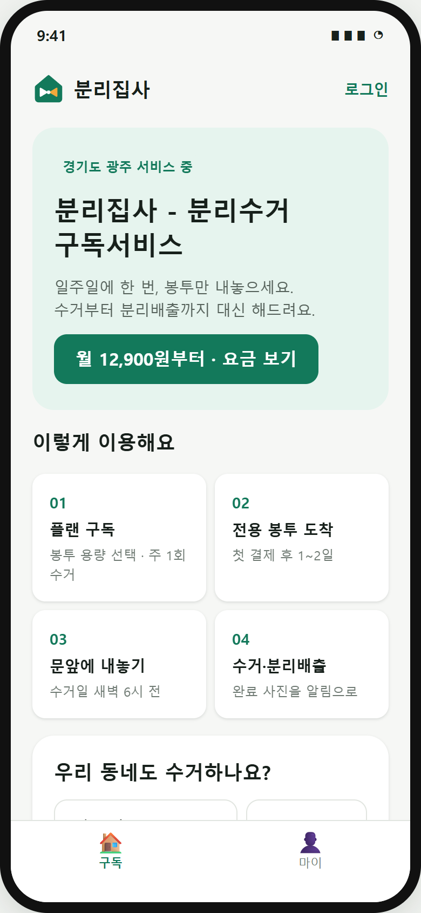
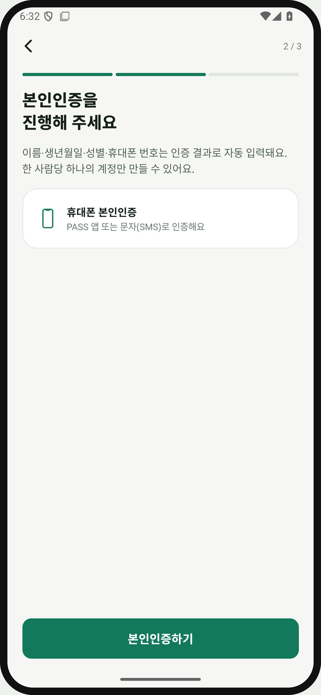
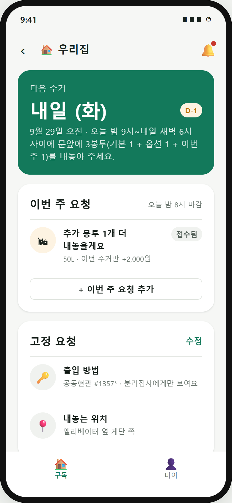
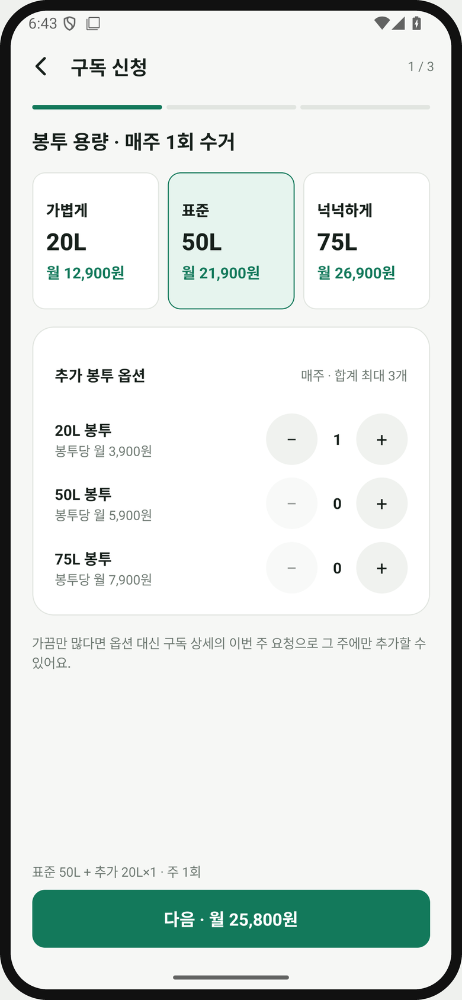
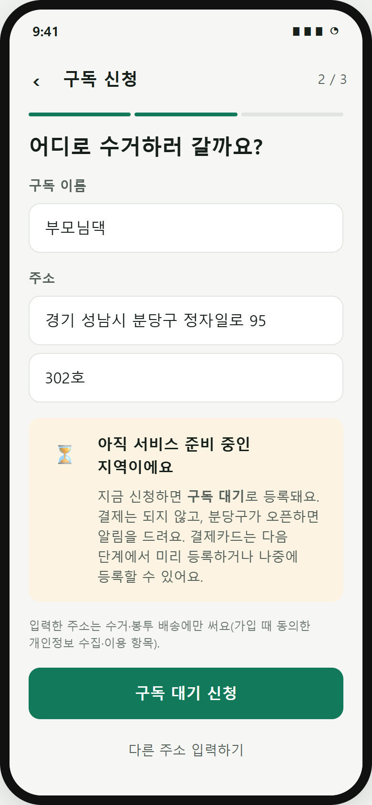
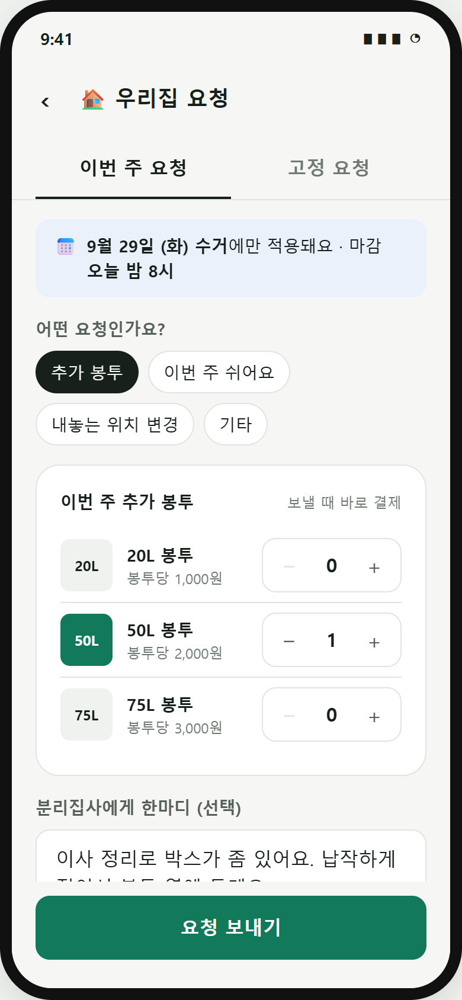
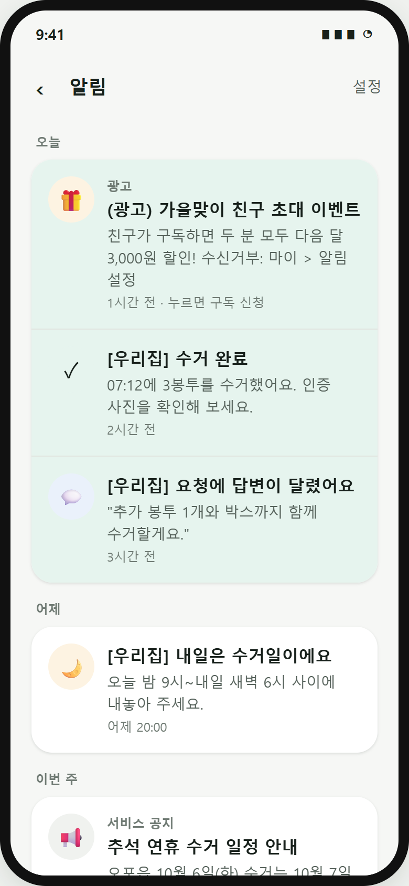
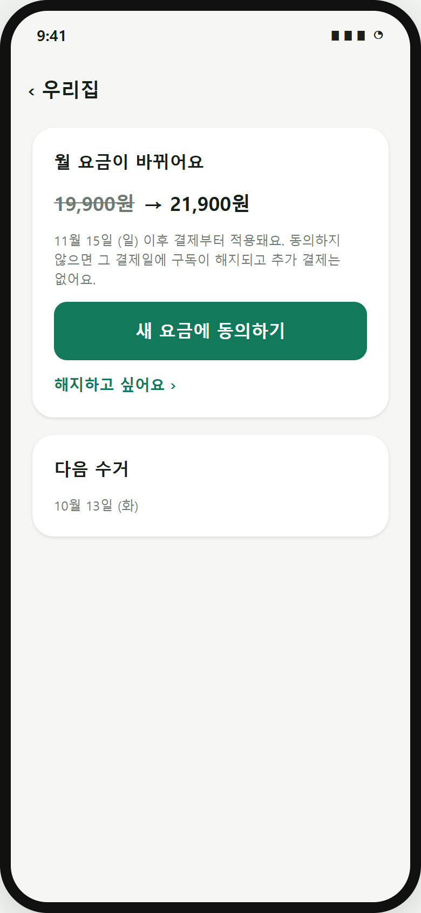
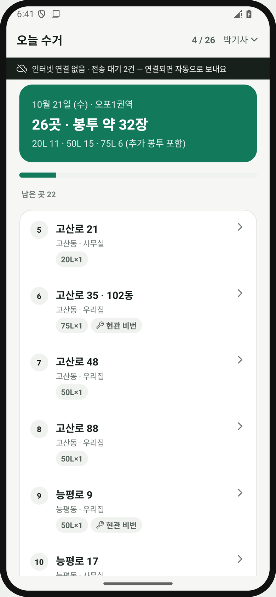
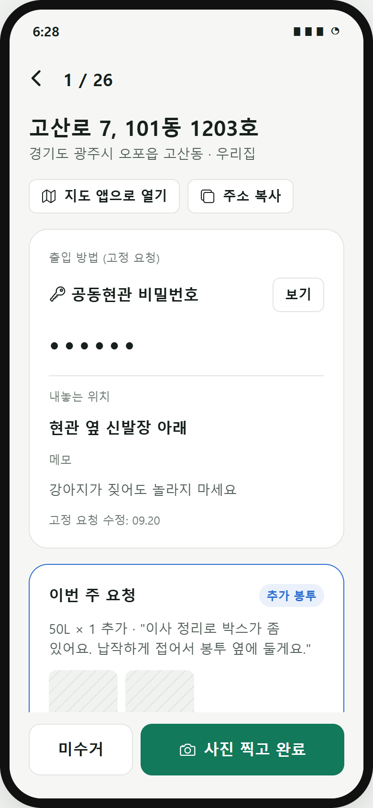
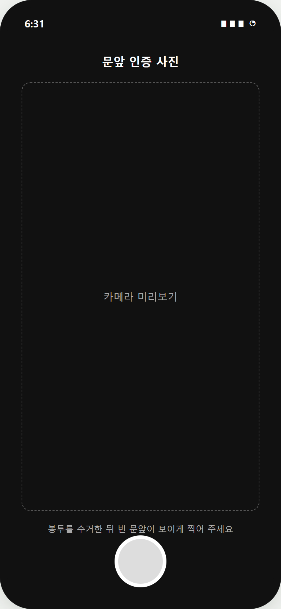
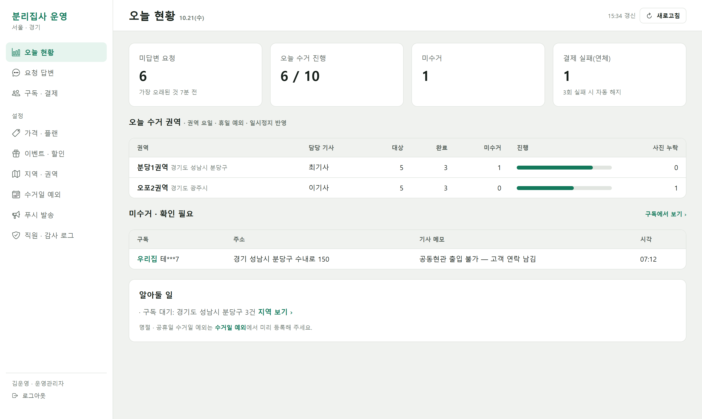
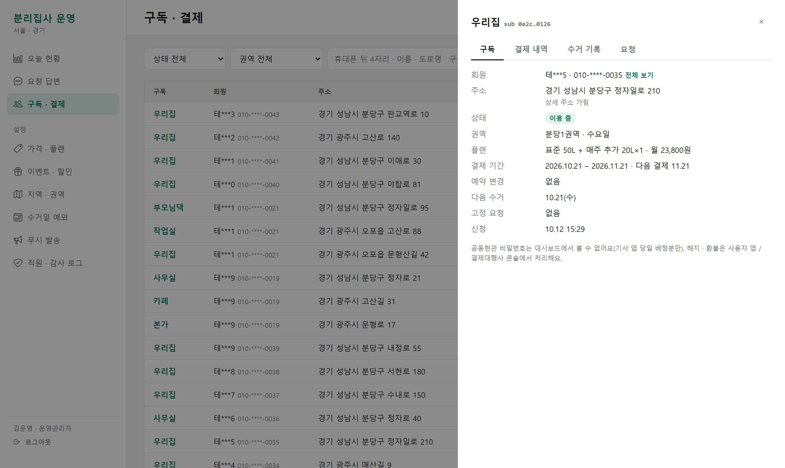
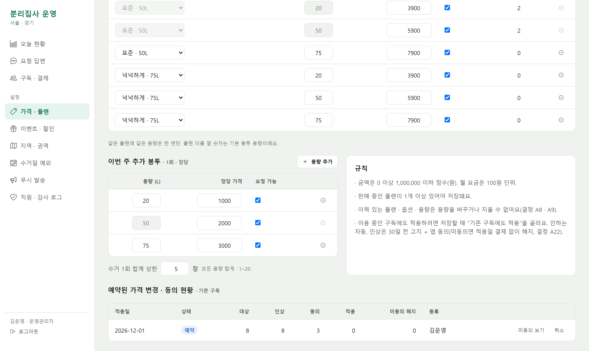
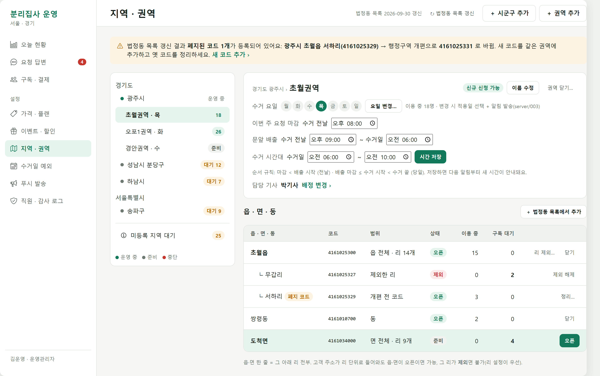
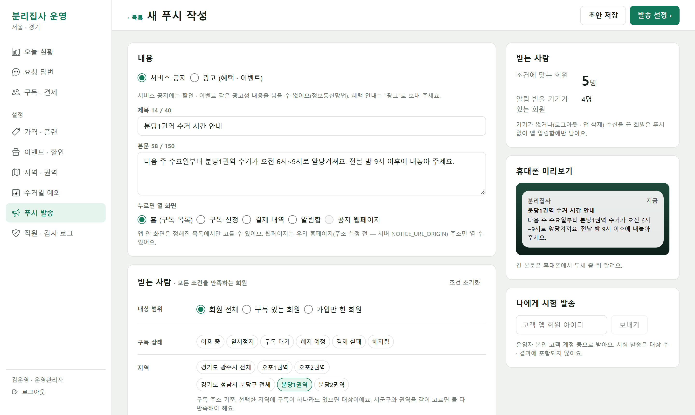
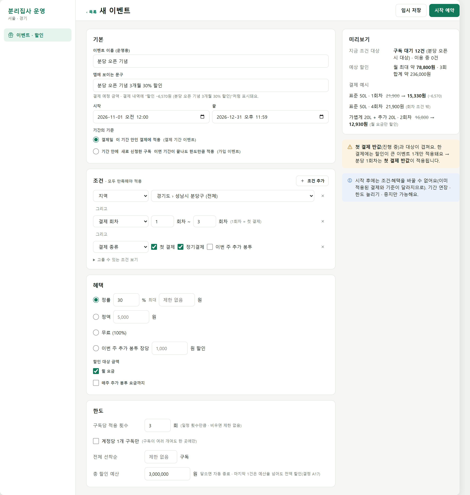